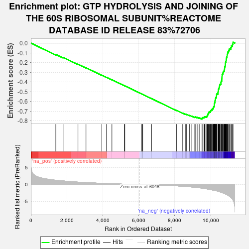

| | | Dataset | deg_con |
| Phenotype | NoPhenotypeAvailable |
| Upregulated in class | na_neg |
| GeneSet | GTP HYDROLYSIS AND JOINING OF THE 60S RIBOSOMAL SUBUNIT%REACTOME DATABASE ID RELEASE 83%72706 |
| Enrichment Score (ES) | -0.78166974 |
| Normalized Enrichment Score (NES) | -2.6953642 |
| Nominal p-value | 0.0 |
| FDR q-value | 0.0 |
| FWER p-Value | 0.0 |
Table: GSEA Results Summary

Fig 1: Enrichment plot: GTP HYDROLYSIS AND JOINING OF THE 60S RIBOSOMAL SUBUNIT%REACTOME DATABASE ID RELEASE 83%72706
Profile of the Running ES Score & Positions of GeneSet Members on the Rank Ordered List
| SYMBOL | RANK IN GENE LIST | RANK METRIC SCORE | RUNNING ES | CORE ENRICHMENT | | 1 | EIF3M | 1387 | 1.268 | -0.1169 | No |
| 2 | EIF2S2 | 1791 | 1.065 | -0.1473 | No |
| 3 | RPS27L | 2619 | 0.723 | -0.2172 | No |
| 4 | EIF3J | 3064 | 0.585 | -0.2537 | No |
| 5 | RPL26L1 | 3946 | 0.365 | -0.3302 | No |
| 6 | EIF2S1 | 4208 | 0.308 | -0.3518 | No |
| 7 | EIF3B | 4506 | 0.252 | -0.3770 | No |
| 8 | EIF5B | 5202 | 0.126 | -0.4382 | No |
| 9 | RPS4Y1 | 5224 | 0.123 | -0.4394 | No |
| 10 | EIF3I | 6144 | -0.014 | -0.5212 | No |
| 11 | EIF4G1 | 6206 | -0.024 | -0.5265 | No |
| 12 | EIF3H | 6219 | -0.027 | -0.5274 | No |
| 13 | EIF2S3 | 6710 | -0.104 | -0.5705 | No |
| 14 | RPL22L1 | 8093 | -0.420 | -0.6914 | No |
| 15 | RPLP1 | 8444 | -0.531 | -0.7198 | No |
| 16 | RPS24 | 8586 | -0.589 | -0.7293 | No |
| 17 | RPL23 | 8662 | -0.622 | -0.7327 | No |
| 18 | RPS26 | 8828 | -0.691 | -0.7438 | No |
| 19 | RPL31 | 8950 | -0.749 | -0.7507 | No |
| 20 | RPL37 | 9115 | -0.846 | -0.7610 | No |
| 21 | EIF3D | 9138 | -0.861 | -0.7585 | No |
| 22 | RPS29 | 9246 | -0.918 | -0.7632 | No |
| 23 | RPS25 | 9360 | -0.982 | -0.7682 | No |
| 24 | RPL36A | 9512 | -1.076 | -0.7761 | Yes |
| 25 | RPL38 | 9517 | -1.078 | -0.7709 | Yes |
| 26 | RPL14 | 9562 | -1.114 | -0.7690 | Yes |
| 27 | EIF3G | 9569 | -1.118 | -0.7638 | Yes |
| 28 | RPS8 | 9632 | -1.172 | -0.7632 | Yes |
| 29 | RPL23A | 9652 | -1.190 | -0.7588 | Yes |
| 30 | UBA52 | 9686 | -1.219 | -0.7554 | Yes |
| 31 | RPS11 | 9777 | -1.304 | -0.7567 | Yes |
| 32 | RPL12 | 9789 | -1.319 | -0.7508 | Yes |
| 33 | EIF4H | 9811 | -1.341 | -0.7458 | Yes |
| 34 | RPS7 | 9834 | -1.364 | -0.7407 | Yes |
| 35 | RPL32 | 9835 | -1.365 | -0.7336 | Yes |
| 36 | RPL27A | 9847 | -1.373 | -0.7275 | Yes |
| 37 | RPS18 | 9864 | -1.384 | -0.7217 | Yes |
| 38 | EIF3C | 9890 | -1.406 | -0.7167 | Yes |
| 39 | EIF3K | 9897 | -1.415 | -0.7099 | Yes |
| 40 | RPS20 | 9927 | -1.452 | -0.7050 | Yes |
| 41 | RPL26 | 9988 | -1.516 | -0.7025 | Yes |
| 42 | RPL36 | 9992 | -1.519 | -0.6949 | Yes |
| 43 | RPS4X | 10025 | -1.547 | -0.6897 | Yes |
| 44 | RPL6 | 10036 | -1.560 | -0.6825 | Yes |
| 45 | RPL35A | 10106 | -1.637 | -0.6802 | Yes |
| 46 | RPL11 | 10116 | -1.648 | -0.6725 | Yes |
| 47 | RPL37A | 10146 | -1.677 | -0.6664 | Yes |
| 48 | RPS15 | 10150 | -1.680 | -0.6580 | Yes |
| 49 | RPL36AL | 10174 | -1.707 | -0.6512 | Yes |
| 50 | RPS27A | 10200 | -1.737 | -0.6444 | Yes |
| 51 | RPS15A | 10201 | -1.738 | -0.6354 | Yes |
| 52 | RPL27 | 10203 | -1.739 | -0.6265 | Yes |
| 53 | RPS19 | 10206 | -1.744 | -0.6177 | Yes |
| 54 | RPL10A | 10222 | -1.760 | -0.6099 | Yes |
| 55 | EIF3E | 10234 | -1.773 | -0.6017 | Yes |
| 56 | RPL34 | 10236 | -1.773 | -0.5927 | Yes |
| 57 | RPLP0 | 10253 | -1.790 | -0.5848 | Yes |
| 58 | RPL28 | 10260 | -1.795 | -0.5761 | Yes |
| 59 | EIF3F | 10272 | -1.809 | -0.5677 | Yes |
| 60 | RPL7 | 10282 | -1.819 | -0.5591 | Yes |
| 61 | EIF4A1 | 10319 | -1.871 | -0.5526 | Yes |
| 62 | RPSA | 10323 | -1.875 | -0.5432 | Yes |
| 63 | RPS21 | 10326 | -1.876 | -0.5336 | Yes |
| 64 | RPL22 | 10327 | -1.881 | -0.5239 | Yes |
| 65 | RPS6 | 10394 | -1.986 | -0.5195 | Yes |
| 66 | EIF1AX | 10400 | -1.989 | -0.5097 | Yes |
| 67 | RPL29 | 10407 | -1.995 | -0.4999 | Yes |
| 68 | RPL30 | 10424 | -2.026 | -0.4908 | Yes |
| 69 | RPS17 | 10425 | -2.027 | -0.4803 | Yes |
| 70 | RPLP2 | 10435 | -2.039 | -0.4706 | Yes |
| 71 | EIF4E | 10456 | -2.082 | -0.4616 | Yes |
| 72 | RPL7A | 10472 | -2.116 | -0.4520 | Yes |
| 73 | RPL35 | 10488 | -2.147 | -0.4422 | Yes |
| 74 | RPL19 | 10497 | -2.164 | -0.4317 | Yes |
| 75 | RPS28 | 10520 | -2.194 | -0.4223 | Yes |
| 76 | RPS23 | 10568 | -2.272 | -0.4148 | Yes |
| 77 | RPS5 | 10570 | -2.279 | -0.4031 | Yes |
| 78 | RPL4 | 10579 | -2.302 | -0.3919 | Yes |
| 79 | RPS3A | 10610 | -2.361 | -0.3823 | Yes |
| 80 | EIF4B | 10615 | -2.377 | -0.3704 | Yes |
| 81 | RPL5 | 10619 | -2.381 | -0.3583 | Yes |
| 82 | RPL17 | 10625 | -2.395 | -0.3464 | Yes |
| 83 | RPS3 | 10631 | -2.405 | -0.3344 | Yes |
| 84 | RPS13 | 10633 | -2.406 | -0.3220 | Yes |
| 85 | RPS14 | 10669 | -2.476 | -0.3123 | Yes |
| 86 | RPL41 | 10687 | -2.505 | -0.3009 | Yes |
| 87 | EIF4A2 | 10709 | -2.563 | -0.2895 | Yes |
| 88 | RPL39 | 10753 | -2.645 | -0.2796 | Yes |
| 89 | RPS12 | 10761 | -2.663 | -0.2665 | Yes |
| 90 | RPS16 | 10777 | -2.688 | -0.2539 | Yes |
| 91 | RPS27 | 10785 | -2.720 | -0.2405 | Yes |
| 92 | RPS2 | 10803 | -2.768 | -0.2277 | Yes |
| 93 | EIF3A | 10813 | -2.788 | -0.2140 | Yes |
| 94 | RPL8 | 10826 | -2.828 | -0.2005 | Yes |
| 95 | RPL18 | 10839 | -2.856 | -0.1868 | Yes |
| 96 | EIF3L | 10852 | -2.881 | -0.1729 | Yes |
| 97 | RPL24 | 10873 | -2.929 | -0.1596 | Yes |
| 98 | RPL15 | 10881 | -2.947 | -0.1449 | Yes |
| 99 | RPL13 | 10908 | -3.031 | -0.1316 | Yes |
| 100 | RPL13A | 10915 | -3.041 | -0.1164 | Yes |
| 101 | RPL21 | 10935 | -3.087 | -0.1021 | Yes |
| 102 | RPL3 | 10960 | -3.194 | -0.0877 | Yes |
| 103 | RPL18A | 11001 | -3.330 | -0.0741 | Yes |
| 104 | RPL10 | 11035 | -3.426 | -0.0593 | Yes |
| 105 | RPS9 | 11115 | -3.789 | -0.0467 | Yes |
| 106 | FAU | 11145 | -3.953 | -0.0288 | Yes |
| 107 | RPS10 | 11213 | -4.320 | -0.0124 | Yes |
| 108 | EIF5 | 11241 | -4.573 | 0.0088 | Yes |
Table: GSEA details [plain text format]
Fig 2: GTP HYDROLYSIS AND JOINING OF THE 60S RIBOSOMAL SUBUNIT%REACTOME DATABASE ID RELEASE 83%72706: Random ES distribution
Gene set null distribution of ES for GTP HYDROLYSIS AND JOINING OF THE 60S RIBOSOMAL SUBUNIT%REACTOME DATABASE ID RELEASE 83%72706